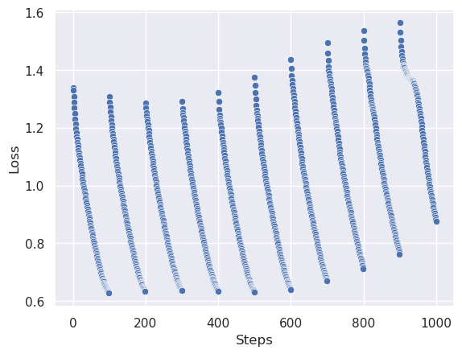
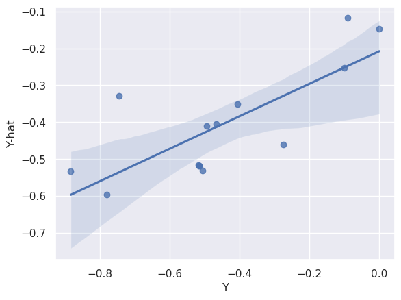
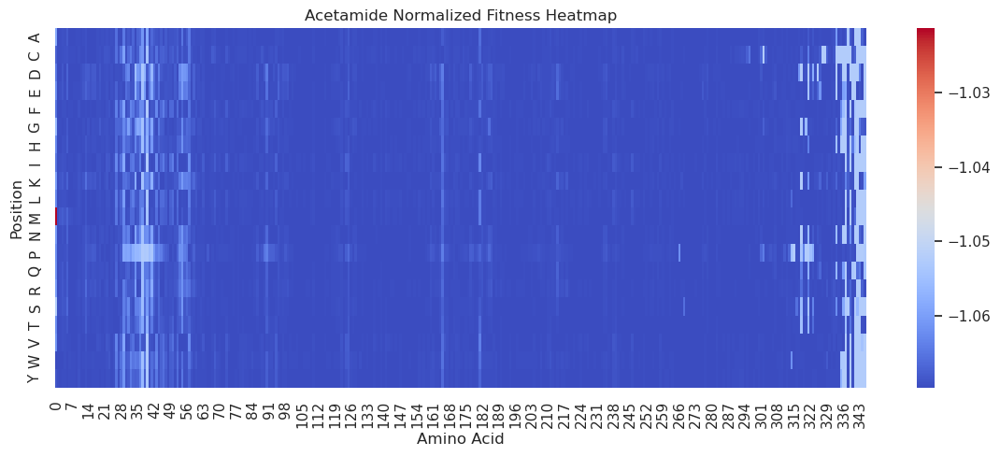

%matplotlib inlineDemo of Core workflow functionality
This notebook will briefly cover how to run assaydata, train, predict, design workflows.
For more information please read the docs.
import numpy as np
import matplotlib
import matplotlib.pyplot as plt
import time
import json
import pandas as pd
import seaborn as sns
sns.set()
from AWSTools.Batchtools.batch_utils import fakeseq # Used for creating fake protein sequences for testingSetup
Connect to the OpenProtein backend with your credentials:
import openprotein
with open('secrets.config', 'r') as f:
config = json.load(f)
session = openprotein.connect(username= config['username'], password= config['password'], backend= "https://dev.api.openprotein.ai/api/")
print(session.backend)https://dev.api.openprotein.ai/api/Load some demo data:
dataset = pd.read_csv("./demo_data/core.csv")
dataset.head(2)| sequence | isobutyramide_normalized_fitness | acetamide_normalized_fitness | propionamide_normalized_fitness | |
|---|---|---|---|---|
| 0 | WRHGDISSSNDTVGVAVVNYKMPRLHTAAEVLDNARKIAEMIVGMK... | -0.5174 | NaN | NaN |
| 1 | WRHGDISSSNDTVGVAVVNYKMPRLHTAAEVLDNARKIAEMIVGMK... | -0.5154 | -2.1514 | -1.1457 |
Data Upload
Create the Demo data in the backend to be able to use it with our suite of tools:
# Create
assay = session.data.create(dataset, "Dataset Name", "Dataset description")
assay_id = assay.id
assayAssayMetadata(assay_name='Dataset Name', assay_description='Dataset description', assay_id='dbf85fa1-12ff-45e7-b5a5-2e93e888a6ac', original_filename='assay_data', created_date=datetime.datetime(2023, 7, 28, 1, 41, 47, 332556), num_rows=15, num_entries=41, measurement_names=['isobutyramide_normalized_fitness', 'acetamide_normalized_fitness', 'propionamide_normalized_fitness'], sequence_length=346)We could also have loaded a job from an old job ID. This will be faster and more efficient for users resuming workflows:
assay = session.data.load_job(assay_id) # can reload job to resume workflowsassay.get_first()| sequence | isobutyramide_normalized_fitness | acetamide_normalized_fitness | propionamide_normalized_fitness | |
|---|---|---|---|---|
| 0 | WRHGDISSSNDTVGVAVVNYKMPRLHTAAEVLDNARKIAEMIVGMK... | -0.5174 | None | None |
assay.get_slice(start=3, end=5)| sequence | isobutyramide_normalized_fitness | acetamide_normalized_fitness | propionamide_normalized_fitness | |
|---|---|---|---|---|
| 0 | MRHGDISSSNDTVGVAVVNYKMPRLHTAAEVLDNARKWAEMIVGMK... | NaN | NaN | -0.7550 |
| 1 | MRHGDISSSNDTVGVAVVNYKMPRLHTAAEVLDNARKYAEMIVGMK... | -0.7448 | -1.7992 | -0.9711 |
assay.sequence_length346Model training
We can use the assay object to create a training job:
train = session.train.create_training_job(assay,
measurement_name=["isobutyramide_normalized_fitness", "acetamide_normalized_fitness"],
model_name="mymodel") # name the resulting model
train_id = train.id
trainJobplus(status=<JobStatus.PENDING: 'PENDING'>, job_id='d292d4de-392f-4fc8-9e45-7d3938f63902', job_type='/workflow/train', created_date=datetime.datetime(2023, 7, 28, 1, 41, 47, 762130), start_date=None, end_date=None, prerequisite_job_id='6ba74592-91ac-47e4-9ea7-59fa0fc199fb', progress_message=None, progress_counter=None, num_records=None, sequence_length=346)#train = session.train.load_job(train_id)
#traintrain.refresh()
train.status<JobStatus.PENDING: 'PENDING'>We can wait for the results before proceeding:
results = train.wait(verbose=False)isobut_results = [i for i in results.traingraph if i.tag=="isobutyramide_normalized_fitness"]
sns.scatterplot(x=[i.step for i in isobut_results], y=[i.loss for i in isobut_results])
plt.xlabel("Steps")
plt.ylabel("Loss");
We can also request a cross-validation job to see the training results in more detail:
train.crossvalidate()
train.crossvalidation.id'e12e7cc5-89e7-4c22-9958-2366243b196e'cvdata = train.crossvalidation.wait()cvresult = [i for i in cvdata if i.measurement_name == "isobutyramide_normalized_fitness"]
sns.regplot(x=[i.y for i in cvresult], y=[i.y_mu for i in cvresult])
plt.xlabel("Y")
plt.ylabel("Y-hat");
We can examine the models associated with a train or assaydata set. These will be identical here but multiple train jobs are possible on a single assaydata:
train.list_models()[{'name': 'mymodel - acetamide_normalized_fitness',
'description': '',
'model_id': '4f5a95cc-7cd9-4d19-bd2c-768c93d8d217',
'training_assaydata': 'dbf85fa1-12ff-45e7-b5a5-2e93e888a6ac',
'job_id': 'd292d4de-392f-4fc8-9e45-7d3938f63902',
'created_date': '2023-07-28T01:43:16.966824',
'model_type': 'EXACT_GP',
'additional_metadata': {'input_dims': 13,
'embedding_model': 'TorchLowRankSVD',
'sequence_length': 346,
'projection_layer': 'dbf85fa1-12ff-45e7-b5a5-2e93e888a6ac_pca.joblib',
'measurement_names': ['acetamide_normalized_fitness'],
'original_task_index': 1}},
{'name': 'mymodel - isobutyramide_normalized_fitness',
'description': '',
'model_id': 'd292d4de-392f-4fc8-9e45-7d3938f63902',
'training_assaydata': 'dbf85fa1-12ff-45e7-b5a5-2e93e888a6ac',
'job_id': 'd292d4de-392f-4fc8-9e45-7d3938f63902',
'created_date': '2023-07-28T01:43:16.327287',
'model_type': 'EXACT_GP',
'additional_metadata': {'input_dims': 13,
'embedding_model': 'TorchLowRankSVD',
'sequence_length': 346,
'projection_layer': 'dbf85fa1-12ff-45e7-b5a5-2e93e888a6ac_pca.joblib',
'measurement_names': ['isobutyramide_normalized_fitness'],
'original_task_index': 0}}]assay.list_models()[{'name': 'mymodel - acetamide_normalized_fitness',
'description': '',
'model_id': '4f5a95cc-7cd9-4d19-bd2c-768c93d8d217',
'training_assaydata': 'dbf85fa1-12ff-45e7-b5a5-2e93e888a6ac',
'job_id': 'd292d4de-392f-4fc8-9e45-7d3938f63902',
'created_date': '2023-07-28T01:43:16.966824',
'model_type': 'EXACT_GP',
'additional_metadata': {'input_dims': 13,
'embedding_model': 'TorchLowRankSVD',
'sequence_length': 346,
'projection_layer': 'dbf85fa1-12ff-45e7-b5a5-2e93e888a6ac_pca.joblib',
'measurement_names': ['acetamide_normalized_fitness'],
'original_task_index': 1}},
{'name': 'mymodel - isobutyramide_normalized_fitness',
'description': '',
'model_id': 'd292d4de-392f-4fc8-9e45-7d3938f63902',
'training_assaydata': 'dbf85fa1-12ff-45e7-b5a5-2e93e888a6ac',
'job_id': 'd292d4de-392f-4fc8-9e45-7d3938f63902',
'created_date': '2023-07-28T01:43:16.327287',
'model_type': 'EXACT_GP',
'additional_metadata': {'input_dims': 13,
'embedding_model': 'TorchLowRankSVD',
'sequence_length': 346,
'projection_layer': 'dbf85fa1-12ff-45e7-b5a5-2e93e888a6ac_pca.joblib',
'measurement_names': ['isobutyramide_normalized_fitness'],
'original_task_index': 0}}]Let’s take one of these models for further use:
model_id = train.list_models()[0]['model_id']
train.list_models()[0]{'name': 'mymodel - acetamide_normalized_fitness',
'description': '',
'model_id': '4f5a95cc-7cd9-4d19-bd2c-768c93d8d217',
'training_assaydata': 'dbf85fa1-12ff-45e7-b5a5-2e93e888a6ac',
'job_id': 'd292d4de-392f-4fc8-9e45-7d3938f63902',
'created_date': '2023-07-28T01:43:16.966824',
'model_type': 'EXACT_GP',
'additional_metadata': {'input_dims': 13,
'embedding_model': 'TorchLowRankSVD',
'sequence_length': 346,
'projection_layer': 'dbf85fa1-12ff-45e7-b5a5-2e93e888a6ac_pca.joblib',
'measurement_names': ['acetamide_normalized_fitness'],
'original_task_index': 1}}Sequence design
We can set up a design job using our trained model as a criteria:
from openprotein.models import DesignJobCreate, ModelCriterion, NMutationCriterion, Criterion
design_data = DesignJobCreate(
assay_id=assay.id,
criteria=[
[
ModelCriterion(
criterion_type='model',
model_id=model_id,
measurement_name="acetamide_normalized_fitness",
criterion=Criterion(target=-0.5, weight=1.0, direction="<")
),
],
[NMutationCriterion(criterion_type="n_mutations", )]
],
mutation_positions=[2,13],
num_steps=10
)
json.loads(design_data.json())
{'assay_id': 'dbf85fa1-12ff-45e7-b5a5-2e93e888a6ac',
'criteria': [[{'criterion_type': 'model',
'model_id': '4f5a95cc-7cd9-4d19-bd2c-768c93d8d217',
'measurement_name': 'acetamide_normalized_fitness',
'criterion': {'target': -0.5, 'weight': 1.0, 'direction': '<'}}],
[{'criterion_type': 'n_mutations'}]],
'num_steps': 10,
'pop_size': None,
'n_offsprings': None,
'crossover_prob': None,
'crossover_prob_pointwise': None,
'mutation_average_mutations_per_seq': None,
'mutation_positions': [2, 13]}# create the design job
design_job = session.design.create_design_job(design_data)
design_id = design_job.id
design_jobJob(status=<JobStatus.PENDING: 'PENDING'>, job_id='e1826033-583b-4581-a602-9ceff483c8e0', job_type='/workflow/design', created_date=datetime.datetime(2023, 7, 28, 1, 43, 24, 642996), start_date=None, end_date=None, prerequisite_job_id=None, progress_message=None, progress_counter=None, num_records=None)
#design_job = session.design.load_job(design_id)results = design_job.wait()
results[-3:][DesignStep(step=9, sample_index=2557, sequence='MRHGDIMSSNMTVGVAVVFPKMPRDRSGEWRLDNADKIKYMTAGMKRKQQQYQLVVEPIRVWQGQMWDYAEYTEQMCYIPGCETSIHSDACKKVNVWGVYSLMGEKHEEHIDKAQYYTCDLIDMDGTFADKYYKISPWYQIEQWYWGQQDYVSRDPVDMKIYLAFCDCHNYPEIWYDTAMKGAYCCVPCNGSMQPAKDDEQQMAKAMQWCHNCYVEVKNMASGSGVQSDFRVSASIIFDQRIVAETGCTEMCIQYAQLSLSDQRYARCEPQSINKQFTIQMRGYSGLQASGDGDRPLIACPRHFVRTYVGTRVIYRESVHGNIRSTTGSAQADVGAWEYKMYENDA', initial_scores=[0, 195], scores=[[DesignSubscore(score=0, metadata=DesignMetadata(y_mu=-1.052383542060852, y_var=0.008722011931240559))], [DesignSubscore(score=195, metadata=DesignMetadata(y_mu=None, y_var=None))]], umap1=0.5089479088783264, umap2=8.538457870483398),
DesignStep(step=9, sample_index=2558, sequence='RRHGDISSNWDTYGVRVVNYTCPRLGHWAEVLANAPNCPGQILGMRLMLRGATGGRCPMYSLMGIMLTCAERMLTAQACVSETVHDFSEACRVATVWGVFKAGTQRCEECGIKGPYNCLVLIPQNGEAQQCYRKILLPCPMEGDYAQTQTYDSANPKGFESSQNHCRDPNEPSEWRDCASFGAELIVRCQGYRYPAKQIWPMNPKNMRWANNWYTGVANAACRDPHESIFPHSMIRGFDGRTWGYQGWEECITQCFQESLQQILSCRANDQSQNETFKIVKRSWRVLQALKRGDRGLNELCFRFYRTWVNDCPKARENVGRLTRSSPGCAQWSVGGLNYWGLEHRA', initial_scores=[0, 196], scores=[[DesignSubscore(score=0, metadata=DesignMetadata(y_mu=-1.052383542060852, y_var=0.008722011931240559))], [DesignSubscore(score=196, metadata=DesignMetadata(y_mu=None, y_var=None))]], umap1=0.4868474304676056, umap2=8.431281089782715),
DesignStep(step=9, sample_index=2559, sequence='MRHGDISSSNDTVGVAVVNYKMPRLHTAAEVLDNARKLAEMIVGMKQGLPGMDLVVFPEYSLQGIMYDPAEMMETAVAIPGEETEIFSRACRKANVWGVFSLTGERHEEHPRKAPYNTLVLIDNNGEIVQKYRKIIPWCPIEGWYPGGQTYVSEGPKGMKISLIICDDGNYPEIWRDCAMKGAELIVRCQGYMYPAKDQQVMMAKAMAWANNCYVAVANAAGFDGVYSYFGHSAIIGFDGRTLGECGEEEMGIQYAQLSLSQIRDARANDQSQNHLFKILHRGYSGLQASGDGDRGLAECPFEFYRTWVTDAEKARENVERLTRSTTGVAQCPVGRLPYEGLEKEA', initial_scores=[0, 346], scores=[[DesignSubscore(score=0, metadata=DesignMetadata(y_mu=-1.0225590467453003, y_var=0.008469139225780964))], [DesignSubscore(score=346, metadata=DesignMetadata(y_mu=None, y_var=None))]], umap1=4.1282830238342285, umap2=6.924859046936035)]We can access the design results:
results[-1].scores[[DesignSubscore(score=0, metadata=DesignMetadata(y_mu=-1.0225590467453003, y_var=0.008469139225780964))],
[DesignSubscore(score=346, metadata=DesignMetadata(y_mu=None, y_var=None))]]Sequence predictions
We can also predict scores for new sequences using our models trained on our old sequences:
# Create some random sequences to predict
np.random.seed(111)
p_seqs = [fakeseq(assay.sequence_length) for i in range(3)]
p_seqs['MVINYHGGMLRTPNHQMEMFQPEFYKCDGILVREQCWLKKWGGIPEFHARIMDCFQQQARMAGNKPIGYKHLYLLHMWCFEVIQAFTNQIAYGKQLPGDHPRTNWYHFEHTMNCNPQLHFTSGSLYRSTMEKLAYSCNYTYCVQTHMYYHRREVIEMLSPSNPARTARHHPHVDMELQIIINVENQVVIPTDWNPWWIRIMCIEPDRWDCMQKKDKVFSTHFRNINVCIRPEHRDDIFDEMYCKYPHRVECQHFSGWKGLPNINPHHRTFTTCGMDPPRMWCLRKVWIDTGKYPAFYSEAQGQFQCPKYEKDAYAKGFRTELGHEISSQYEVGNFTMTNQAIAGLA',
'QRMNDISWFCLAEWYWYKKEWILMFLCDTDGDENQAKCQQINVQIIIYVPSRAVVEIMEALFVMSAHLYWYTAVADNFLLDSHLLDGRDNTTFMIIGTRQWSIVHRSGLSYYKQNDLSNKLQMQKRRLLMPEMWWIRNWPWLQLVLNMENARHTGYYHQSRNGVWQWIDLLEAQRGCHQRGYVNTRQALFFAADHQLWDHTIIYTVQWEPAHQKDDQVRKMICAEYDCIIVKSSAYCFCNFQFHQKEFGFKCFIVSHGALSLTYLHYVVFRPKEEPHWHGTISACKDDRPYGLWLMGTPPYFWAPSGKLANWNMMEPCETQDCFANNYPESWLKFWWVMTTGSKPS',
'NSIMWHDIKCPRMMQWAWHVDNVATEVNTYNGDQTKGNGKFAHAQPSHFPYMFFWQMAIMGYHIDAAFPCLKNELVHGMCQWECLCIVNGRPVKPYENSVFSYHYDSEAKSYKFDKEEPMMFQFFELIQTATTHEYVWHECSSNQQNIGLNSQMNRHICQPEILIPLYRVTLLESGPMIVRHSAIKTYEPGPGWLPTGDFIKSFRQRTDMLIWTGFNRNVRVVGMMAFKTMHLGPAVCEFSQEDHHDHTLRWKHKWTKACKYWDIRQIANQLPCFSELEHKKTLIHCETQKDKFESKWLMRMLCDRPHSEVDMYHHCQAVNFERKWTSLQGWCQSGKVTYPCDDPT']pjob = session.predict.create_predict_job(sequences=p_seqs, train_job=train)
pjob_id = pjob.id
pjobJob(status=<JobStatus.PENDING: 'PENDING'>, job_id='395645cb-2d09-46cf-bcc2-c625fb7e2063', job_type='/workflow/predict', created_date=None, start_date=None, end_date=None, prerequisite_job_id=None, progress_message=None, progress_counter=0, num_records=None)results = pjob.wait(verbose=True)Waiting: 100%|██████████| 100/100 [07:22<00:00, 4.42s/it, status=SUCCESS]results[0].dict(){'sequence': 'MVINYHGGMLRTPNHQMEMFQPEFYKCDGILVREQCWLKKWGGIPEFHARIMDCFQQQARMAGNKPIGYKHLYLLHMWCFEVIQAFTNQIAYGKQLPGDHPRTNWYHFEHTMNCNPQLHFTSGSLYRSTMEKLAYSCNYTYCVQTHMYYHRREVIEMLSPSNPARTARHHPHVDMELQIIINVENQVVIPTDWNPWWIRIMCIEPDRWDCMQKKDKVFSTHFRNINVCIRPEHRDDIFDEMYCKYPHRVECQHFSGWKGLPNINPHHRTFTTCGMDPPRMWCLRKVWIDTGKYPAFYSEAQGQFQCPKYEKDAYAKGFRTELGHEISSQYEVGNFTMTNQAIAGLA',
'predictions': [{'model_id': '4f5a95cc-7cd9-4d19-bd2c-768c93d8d217',
'model_name': 'mymodel - acetamide_normalized_fitness',
'properties': {'acetamide_normalized_fitness': {'y_mu': -1.052383542060852,
'y_var': 0.008722011931240559}}},
{'model_id': 'd292d4de-392f-4fc8-9e45-7d3938f63902',
'model_name': 'mymodel - isobutyramide_normalized_fitness',
'properties': {'isobutyramide_normalized_fitness': {'y_mu': -0.5801481008529663,
'y_var': 0.07187105715274811}}}]}We can also send a single sequence for single site mutation analysis:
sequence = assay.get_first().sequence[0]
sspredict = session.predict.create_predict_single_site(sequence, train)ssp_results = sspredict.wait(verbose=True)
ssp_results[0:3]Waiting: 100%|██████████| 100/100 [03:30<00:00, 2.11s/it, status=SUCCESS][SequencePrediction(position=0, amino_acid='A', predictions=[Prediction(model_id='4f5a95cc-7cd9-4d19-bd2c-768c93d8d217', model_name='mymodel - acetamide_normalized_fitness', properties={'acetamide_normalized_fitness': {'y_mu': -1.0585644245147705, 'y_var': 0.00865915883332491}}), Prediction(model_id='d292d4de-392f-4fc8-9e45-7d3938f63902', model_name='mymodel - isobutyramide_normalized_fitness', properties={'isobutyramide_normalized_fitness': {'y_mu': -0.509050190448761, 'y_var': 0.04599723219871521}})]),
SequencePrediction(position=0, amino_acid='R', predictions=[Prediction(model_id='4f5a95cc-7cd9-4d19-bd2c-768c93d8d217', model_name='mymodel - acetamide_normalized_fitness', properties={'acetamide_normalized_fitness': {'y_mu': -1.0604116916656494, 'y_var': 0.008511288091540337}}), Prediction(model_id='d292d4de-392f-4fc8-9e45-7d3938f63902', model_name='mymodel - isobutyramide_normalized_fitness', properties={'isobutyramide_normalized_fitness': {'y_mu': -0.38895800709724426, 'y_var': 0.01822088658809662}})]),
SequencePrediction(position=0, amino_acid='N', predictions=[Prediction(model_id='4f5a95cc-7cd9-4d19-bd2c-768c93d8d217', model_name='mymodel - acetamide_normalized_fitness', properties={'acetamide_normalized_fitness': {'y_mu': -1.0604782104492188, 'y_var': 0.008520051836967468}}), Prediction(model_id='d292d4de-392f-4fc8-9e45-7d3938f63902', model_name='mymodel - isobutyramide_normalized_fitness', properties={'isobutyramide_normalized_fitness': {'y_mu': -0.39489519596099854, 'y_var': 0.019712451845407486}})])]ssp_results[0:3][0].dict(){'position': 0,
'amino_acid': 'A',
'predictions': [{'model_id': '4f5a95cc-7cd9-4d19-bd2c-768c93d8d217',
'model_name': 'mymodel - acetamide_normalized_fitness',
'properties': {'acetamide_normalized_fitness': {'y_mu': -1.0585644245147705,
'y_var': 0.00865915883332491}}},
{'model_id': 'd292d4de-392f-4fc8-9e45-7d3938f63902',
'model_name': 'mymodel - isobutyramide_normalized_fitness',
'properties': {'isobutyramide_normalized_fitness': {'y_mu': -0.509050190448761,
'y_var': 0.04599723219871521}}}]}preds = pd.DataFrame([i.dict() for i in ssp_results])
preds['acetamide_normalized_fitness'] = [i[0]['properties']['acetamide_normalized_fitness']['y_mu'] for i in preds.predictions]
preds.head()| position | amino_acid | predictions | acetamide_normalized_fitness | |
|---|---|---|---|---|
| 0 | 0 | A | [{'model_id': '4f5a95cc-7cd9-4d19-bd2c-768c93d... | -1.058564 |
| 1 | 0 | R | [{'model_id': '4f5a95cc-7cd9-4d19-bd2c-768c93d... | -1.060412 |
| 2 | 0 | N | [{'model_id': '4f5a95cc-7cd9-4d19-bd2c-768c93d... | -1.060478 |
| 3 | 0 | D | [{'model_id': '4f5a95cc-7cd9-4d19-bd2c-768c93d... | -1.064667 |
| 4 | 0 | C | [{'model_id': '4f5a95cc-7cd9-4d19-bd2c-768c93d... | -1.067287 |
df_pivot = preds.pivot(columns='position', index='amino_acid', values='acetamide_normalized_fitness')
# Create heatmap
plt.figure(figsize=(14, 5))
sns.heatmap(df_pivot, cmap='coolwarm', annot=False, fmt=".2f")
plt.title('Acetamide Normalized Fitness Heatmap')
plt.xlabel('Amino Acid')
plt.ylabel('Position')
plt.show()
Resume workflows
Lastly, it’s possible to resume from where you left off with the job id:
train = session.train.load_job(train_id)
trainJobplus(status=<JobStatus.SUCCESS: 'SUCCESS'>, job_id='d292d4de-392f-4fc8-9e45-7d3938f63902', job_type='/workflow/train', created_date=datetime.datetime(2023, 7, 28, 1, 41, 47, 762130), start_date=datetime.datetime(2023, 7, 28, 1, 42, 48, 246124), end_date=datetime.datetime(2023, 7, 28, 1, 43, 17, 160692), prerequisite_job_id='6ba74592-91ac-47e4-9ea7-59fa0fc199fb', progress_message=None, progress_counter=None, num_records=None, sequence_length=346)This reloaded job can be used as above for predict or design tasks, and those can also be reloaded!
pjob = session.predict.load_job(pjob_id)
pjobJob(status=<JobStatus.SUCCESS: 'SUCCESS'>, job_id='395645cb-2d09-46cf-bcc2-c625fb7e2063', job_type='/workflow/predict', created_date=datetime.datetime(2023, 7, 28, 1, 56, 20, 244335), start_date=datetime.datetime(2023, 7, 28, 2, 3, 3, 642814), end_date=datetime.datetime(2023, 7, 28, 2, 3, 37, 431378), prerequisite_job_id='d292d4de-392f-4fc8-9e45-7d3938f63902', progress_message=None, progress_counter=None, num_records=None)